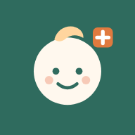

지금 진료 중인 소아과, 달빛어린이병원, 야간 응급실, 문 연 약국을 한 번에 찾아요.
응급실까지 가야 할지 헷갈리면 "어디로 가야 해요?"를 눌러 보세요.
해열제·체온·소변 기록, 응급 카드, 예방접종 일정을 한곳에서 챙겨요.
🔒 아이 정보와 기록은 이 휴대폰에만 저장되고 어디에도 보내지 않아요.
홈 화면에 추가하면 앱처럼 바로 열리고, 병원 정보를 카톡으로 보낼 수도 있어요.
공공데이터를 바탕으로 만든 무료 서비스예요. 위급하면 언제나 119.